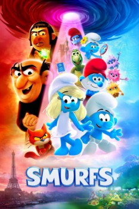

País:Estados Unidos, 89 minutos.
Idiomas:Inglés, Francés, Japonés
GénerosAnimación, Familiar, Fantasía
Director/es:Chris Miller
Guionistas:Pam Brady
Códec de vídeo:Unknown
Número: 187


Certificación:PG
Argumento:
Película musical de animación centrada en las icónicas creaciones de Peyo. Cuando Papá Pitufo es secuestrado de forma misteriosa por los malvados brujos Razamel y Gargamel, Pitufina lleva a los Pitufos a una misión al mundo real para salvarle. Con la ayuda de nuevos amigos, los Pitufos deberán descubrir qué define su destino para salvar el universo.
Reparto
Medio: Archivo de video,
Localización: D:\Multimedia\Películas\Pitufos (2025)\Pitufos (2025).mkv
Prestado: No
Rel. aspecto: Unknown